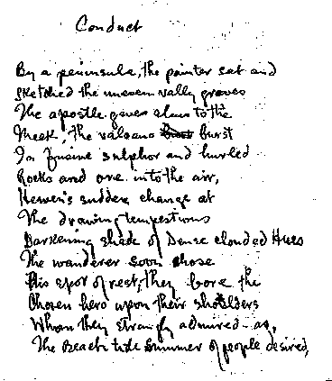
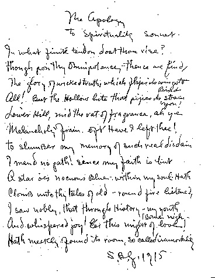

Samuel Greenberg: American
Poet
Home | Bio | Works | Praise |
Images | Crane | Reading | Links | E-mail
|
Samuel Greenberg: American
Poet
Home | Bio | Works | Praise |
Images | Crane | Reading | Links | E-mail
|
Greenberg at the time of his bar mitzvah in 1907.
|
 Reproduced from Laughlin's Poems from the Greenberg Manuscripts. There is a typeset version of this poem. 
Reproduced from Holden and McManis's There is a typeset version of this poem. |